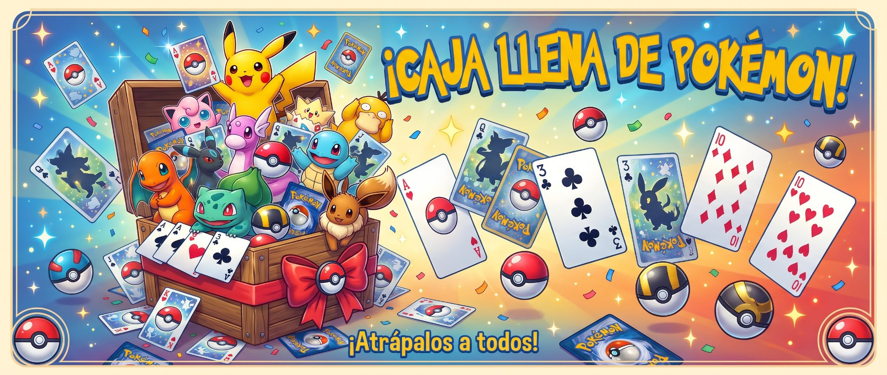

El juego de cartas clásico de fusiones y canastas, con cartas Pokémon. Tú contra la CPU, en partidos a 5000 puntos.
Proyecto de fans sin fines de lucro. Pokémon y los nombres de los personajes son marcas de Nintendo, Creatures Inc. y Game Freak Inc. Datos y arte vía PokéAPI.
Gana el partido quien llegue primero a 5000 puntos al cierre de una mano. Se juega con 108 cartas (dos barajas con comodines) y cada carta lleva un Pokémon; el comodín es Ditto.
En tu turno: roba 2 cartas del mazo o toma todo el pozo; después puedes fusionar y al final descartas 1 carta.
Una fusión son 3 a 7 cartas del mismo valor. Los comodines (Ditto y todos los 2) pueden ayudar, pero nunca pueden ser más que las cartas naturales. Una fusión de 7 es una canasta: natural (sin comodines) vale 500, mixta 300 y la de puros comodines 2000.
La primera fusión de cada mano debe sumar un mínimo según tu puntaje del partido: si vas en negativo, 15; de 0 a 1495, 50; de 1500 a 2995, 90; con 3000 o más, 120.
Para tomar el pozo necesitas empatar su carta superior: con una pareja natural de ese valor; o, si el pozo no está congelado para ti, con una carta natural más un comodín, o si la carta encaja en una fusión que ya tienes en la mesa. El pozo está congelado para ti mientras no hayas hecho tu fusión inicial, y se congela para todos cuando alguien descarta un comodín: congelado, solo se toma con pareja natural. Un 3 negro arriba del pozo lo bloquea por un turno.
Los 3 rojos se apartan en cuanto llegan a tu mano y robas su repuesto: al final de la mano valen +100 cada uno si hiciste al menos una fusión, y −100 si no fusionaste nada. Los 3 negros no se fusionan, salvo como grupo de 3 o 4 en el turno en que sales.
Para salir (quedarte sin cartas) necesitas al menos una canasta. Salir vale 100 puntos; si sales en un solo turno sin haber fusionado antes en toda la mano (salida oculta), vale 200. Al salir, el rival resta el valor de las cartas que le queden en la mano. Si el mazo se agota y quien debe robar no toma el pozo, la mano termina y se puntúa igual, sin bonus de salida.